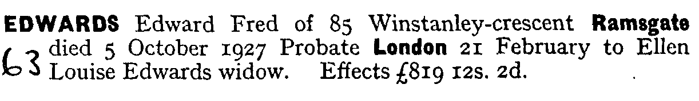
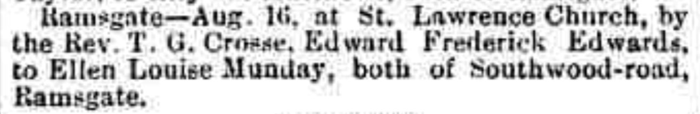

Edward Frederick Edwards cNov 1871 - 1927
[ Home ] | [ Calendar ] | [ Surnames Index ] | [ Family History ]The child of Stephen Edwards (a stationery engine driver) and Ann Lasslett, Edward Edwards, the first cousin three-times-removed on the mother's side of <a href="I1.html">Nigel Horne</a>, was born in St Lawrence, Thanet, Kent, England <i>c.</i> Nov 1871<span class="citation">1</span>, was baptized there on Dec 10, 1871 and also married Ellen Munday (with whom he had 1 child, Elsie Elizabeth) there at St Lawrence Church, on Aug 16, 1902<span class="citation">3</span>.</p><p>Edward spent all of his life in Kent, England. Throughout his life, he lived in several places around the county: at Whitehall Waterworks, St Lawrence, Thanet, Kent, England on Apr 3, 1881<span class="citation">5</span>; West Dumpton in Thanet on Apr 5, 1891<span class="citation">6</span>; at Waterworks Cottage, St Lawrence in Thanet on Mar 31, 1901<span class="citation">7</span> (when he was living with his parents); at Winstanley Crescent, St Lawrence in Thanet in 1903; and at 85 Winstanley Crescent, St Lawrence in Thanet on Apr 2, 1911<span class="citation">8</span> and in 1927<span class="citation">4</span>. <p>He died on Oct 5, 1927 in Thanet<span class="citation">2</span>.
Parents
- Stephen was born c. May 1847
- Ann Maria was born c. 1849
Children
- Elsie Elizabeth was born on Aug 13, 1903
Citations
- England & Wales births 1837-2006 - Findmypast
- England & Wales deaths 1837-2007 - Findmypast
- England & Wales marriages 1837-2008 - Findmypast
- From his probate record
- 1881 England, Wales & Scotland Census - Findmypast (was age 9 and the son of the head of the household)
- 1891 England, Wales & Scotland Census - Findmypast (was age 19 and the son of the head of the household)
- 1901 England, Wales & Scotland Census - Findmypast (was age 29 and the son of the head of the household)
- 1911 Census for England & Wales - Findmypast (was age 39 and the head of the household)
Media
Edward Edwards - probate

Thanet Advertiser - 23 Aug 1902

England & Wales births 1837-2006 - BMD/B/1871/4/AZ/000188/353
England & Wales deaths 1837-2007 - BMD/D/1927/4/AZ/000218/090
England & Wales marriages 1837-2008 - BMD/M/1902/3/AZ/000114/346
Kent, Canterbury Archdeaconry marriages 1538-1928 - GBPRS/CANT/M/97022419/1
England Marriages 1538-1973 - R_848396710
1911 Census for England & Wales - GBC/1911/RG14/04529/0081/1
Family Tree

Generated by Ged2Site. Last updated on Jul 20, 2025